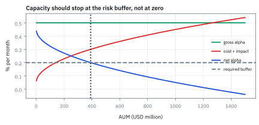
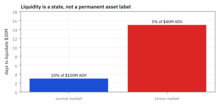
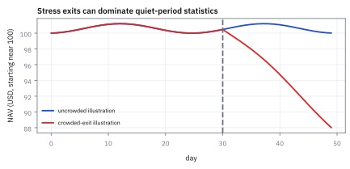

15.7 Alpha Decay and Crowding
กำไรพิเศษของกลยุทธ์ (alpha) จางลงเมื่อคนอื่นค้นพบวิธีเดียวกัน และบางลงเมื่อกองทุนมีเงินมากขึ้น หน้านี้คำนวณว่ามันจางเร็วแค่ไหน กองทุนรับเงินได้มากที่สุดเท่าไร และต้องใช้กี่วันจึงขายหุ้นออกหมดเมื่อทุกกองทุนรีบขายพร้อมกัน
ทีมหนึ่งบริหารกองทุนที่เทรดหุ้นตามกฎที่เขียนไว้ตายตัว เรียกว่ากลยุทธ์เชิงปริมาณ กองทุนนี้หากินจาก alpha คือผลตอบแทนส่วนที่เกินกว่าที่ได้จากการขึ้นลงของตลาดทั้งตลาด (นิยามเต็มอยู่ใน CAPM: beta และ alpha)
alpha มีปัญหาสองข้อ ข้อแรก มันไม่อยู่ถาวร พอคนอื่นค้นพบวิธีเดียวกัน กำไรก็ถูกแบ่งจนบางลงทุกเดือน ข้อสอง ยิ่งกองทุนมีเงินมาก คำสั่งซื้อขายยิ่งใหญ่ ราคาจึงยิ่งขยับหนีเรา ต้นทุนต่อดอลลาร์จึงสูงขึ้น
กลยุทธ์นี้เปิดมาครบ 12 เดือนแล้ว ของที่รู้มีดังนี้
- alpha ตอนเปิด $\alpha_0=0.50\%$ ต่อเดือน เป็นค่าที่ทีมวิจัยคาดไว้ (ภาพรวมด้านล่างจะแสดงว่าตัวเลขนี้มาจากไหน)
- alpha จางลงด้วยอัตรา $k=0.08$ ต่อเดือน (ค่าสมมติ ขั้นแรกของหน้านี้จะอธิบายว่าอัตรานี้แปลว่าอะไร)
- เงินในกองทุนตอนนี้ $A=\$100$ ล้าน
- ต้นทุนซื้อขายต่อเดือน คิดเป็นสัดส่วนของเงินกองทุน คือ $C(A)=0.05\%+0.04\%\sqrt{A/A_0}$ โดย $A_0=\$10$ ล้านเป็นขนาดอ้างอิง ก้อน 0.05% คือค่านายหน้าและค่าใช้จ่ายอื่นที่จ่ายเท่ากันทุกขนาด ก้อนที่มีรากที่สองคือราคาที่ขยับหนีเพราะคำสั่งของเราเอง ยิ่งกองทุนใหญ่ ก้อนนี้ยิ่งแพง
- คณะกรรมการลงทุนตั้งเกณฑ์ว่า alpha สุทธิ คือ alpha ที่หักต้นทุนแล้ว ต้องไม่ต่ำกว่า $b=0.20\%$ ต่อเดือน
ผู้จัดการกองทุนดูตัวเลขแล้วเสนอว่า “ต่ำกว่าเกณฑ์นิดเดียว คืนเงินลูกค้าครึ่งหนึ่งให้เหลือ \$50 ล้าน ต้นทุนก็ลดจนผ่านแล้ว” ข้อเสนอนี้จริงไหม?
ลองตอบก่อนเปิดเฉลย
ไม่จริง ขั้นที่ครบ 12 เดือนของหน้านี้คำนวณให้ดูทีละขั้น ตัวเลขหลักมีสามตัว คือ alpha ที่เหลือหลัง 12 เดือน และต้นทุนที่ \$100 ล้านกับ \$50 ล้าน ($A/A_0$ เป็น 10 และ 5)
alpha สุทธิคือ alpha ลบต้นทุน ที่ \$100 ล้านเหลือ $0.1914\%-0.1765\%\approx0.015\%$ ต่อเดือน ย่อเหลือ \$50 ล้านได้ $0.1914\%-0.1394\%=0.0520\%$ ดีขึ้นแต่ยังห่างเกณฑ์ 0.20% มาก
ต่อให้กองทุนเล็กจนเกือบไม่มีเงิน ก้อนรากที่สองเกือบเป็นศูนย์ แต่ก้อนคงที่ 0.05% ยังอยู่ จึงเหลือได้อย่างมาก $0.1914\%-0.05\%=0.1414\%$ ซึ่งยังต่ำกว่าเกณฑ์ ไม่มีขนาดไหนผ่านเลย
ต้นเหตุคือตัวสัญญาณเองบางลงจนต่ำกว่า $0.05\%+0.20\%=0.25\%$ ไปตั้งแต่เดือนที่ 8.66 (ขั้นที่ capacity หดตามเวลาจะคำนวณให้ดู) ปัญหาจึงไม่ใช่เงินมากไป แต่เป็นสัญญาณที่เหลือน้อยไป ทางเลือกจริงคือหยุดกลยุทธ์หรือหาสัญญาณใหม่ ไม่ใช่ย่อกองทุน
ภาพรวมก่อนลงสูตร
นักวิจัยหากลยุทธ์ใหม่ด้วยการหาสัญญาณ คือตัวแปรที่ช่วยทำนายว่าหุ้นตัวไหนจะให้ผลตอบแทนดีกว่าตัวอื่น แล้วทดสอบกับข้อมูลย้อนหลังว่า ถ้าเทรดตามสัญญาณนี้ในอดีต จะได้กำไรเท่าไร การทดสอบย้อนหลังแบบนี้เรียกว่า backtest คำถามของหน้านี้คือ กำไรที่เห็นใน backtest จะเหลือเท่าไรเมื่อใช้จริง และจะอยู่ได้นานแค่ไหน
มีงานวิจัยที่วัดเรื่องนี้ตรง ๆ McLean กับ Pontiff (ตีพิมพ์ปี 2016) รวบรวมสัญญาณ 97 ตัวที่เคยตีพิมพ์ในวารสารวิชาการ แล้วดูผลตอบแทนของพอร์ตที่เทรดตามสัญญาณเหล่านั้นในสามช่วงเวลา ถ้าให้ผลในช่วงข้อมูลที่ผู้เขียนแต่ละคนใช้หาสัญญาณเป็น 100 ผลที่พบโดยเฉลี่ยคือ
- ช่วงข้อมูลที่ใช้หาสัญญาณ: 100
- หลังช่วงข้อมูลนั้น แต่ก่อนบทความตีพิมพ์: เหลือ 74 คือต่ำลง 26%
- หลังบทความตีพิมพ์: เหลือ 42 คือต่ำลง 58%
ทำไมต้องแยกสองช่วงหลัง เพราะในช่วงก่อนตีพิมพ์ ยังไม่มีใครนอกจากผู้เขียนรู้จักสัญญาณนี้ ส่วนที่หายไป 26 จุดจึงไม่ได้เกิดจากคนแย่ง แต่เป็นโชคที่ติดมากับการค้นหา นักวิจัยลองหลายแบบแล้วเลือกแบบที่ผลดีที่สุด ผลจึงสูงเกินจริงไปบางส่วน (เรื่องเดียวกับใน spurious regression และ overfitting) ส่วนที่หายเพิ่มหลังตีพิมพ์คือส่วนที่คนอื่นอ่านแล้วเข้ามาเทรดแบบเดียวกัน
อ่านได้ว่า ส่วนที่เป็นของจริง (ไม่ใช่โชค) มี 74 จุด และ 32 จุดในนั้นหายไปเพราะคนแห่เข้ามา คิดเป็นราว 43% ของส่วนที่เป็นของจริง
ตัวเลขนี้ใช้วางแผนได้ทันที สมมติ backtest ของเราให้ 1.19% ต่อเดือน (ค่าสมมติ) ถ้าสัญญาณของเราจางแบบค่าเฉลี่ยของ 97 ตัวนั้น ค่าที่ควรคาดหลังคนอื่นรู้คือ $0.42\times1.19\%\approx0.50\%$ ต่อเดือน นี่คือที่มาของ alpha ตอนเปิด 0.50% ในโจทย์เปิดหน้า
ผลตอบแทนส่วนเกินมาจากหลายแหล่ง เช่น ค่าตอบแทนที่ได้จากการรับความเสี่ยงที่คนอื่นไม่อยากรับ ค่าตอบแทนจากการยอมซื้อเมื่อคนอื่นต้องรีบขาย (ให้สภาพคล่อง) ข้อจำกัดเรื่องเงินทุนของคนอื่น เงินที่ไหลเข้าออกตามกำหนดที่รู้ล่วงหน้า (เช่นวันที่ดัชนีเปลี่ยนรายชื่อหุ้น กองทุนดัชนีต้องซื้อขายตาม) และความรู้ที่เหนือกว่าคนอื่น แหล่งสุดท้ายจางเร็วที่สุด เพราะพอคนอื่นรู้ด้วย ความรู้นั้นก็ไม่เหนือกว่าแล้ว
alpha สุทธิ (alpha ที่หักต้นทุนซื้อขายแล้ว) ถูกบีบจากสองแรง แรงแรกคือเวลา สัญญาณจางเมื่อมีคนลอกตาม แรงที่สองคือขนาด ต้นทุนซื้อขายของเราเองโตตามเงินในกองทุน มีอีกเรื่องที่ผูกสองแรงเข้าด้วยกัน เรียกว่า crowding คือสภาพที่หลายกองทุนถือหุ้นชุดเดียวกัน พอถึงวันที่ต้องขาย ทุกกองก็ขายพร้อมกัน
หน้านี้สร้างทีละขั้นตามลำดับนี้
- แบบจำลองการจาง: alpha เหลือเท่าไรในเดือนที่ $t$
- ต้นทุนที่โตตามขนาดเงิน และเกณฑ์ที่ต้องผ่าน
- capacity (เงินมากที่สุดที่กองทุนรับได้) ตอนเปิด และ capacity ที่หดตามเวลา
- ขนาดที่ทำกำไรรวมเป็นดอลลาร์ได้มากที่สุด และใครได้ประโยชน์จากขนาดนั้น
- ผลตอบแทนที่เงินของผู้ลงทุนได้จริง เทียบกับตัวเลขที่กองทุนรายงาน
- เวลาที่ใช้ขายหุ้นออกหมด และวันที่ทุกกองทุนรีบขายพร้อมกัน
รูป — alpha ที่ตีพิมพ์แล้วเหลือเท่าไร
ศัพท์ที่ใช้ในหัวข้อนี้
- Backtest
- การทดสอบกลยุทธ์กับข้อมูลย้อนหลัง ว่าถ้าเทรดตามกฎนี้ในอดีต จะได้ผลตอบแทนเท่าไร ผลที่ได้มักสูงกว่าที่จะได้จริงในอนาคต
- Alpha สุทธิ
- alpha ที่หักต้นทุนซื้อขายแล้ว คือส่วนที่ผู้ลงทุนได้จริง
- Alpha decay
- การที่ผลตอบแทนส่วนเกินของสัญญาณลดลงตามเวลา เพราะคนอื่นค้นพบและเทรดแบบเดียวกัน ราคาจึงปรับตัวเร็วขึ้น กำไรที่เหลือให้เก็บจึงน้อยลง ใช้กำหนดว่าต้องทบทวนสัญญาณบ่อยแค่ไหน
- Half-life
- เวลาที่ alpha ลดลงเหลือครึ่งหนึ่งของค่าเดิม
- Capacity
- เงินกองทุนก้อนใหญ่ที่สุดที่ยังทำให้ alpha สุทธิ (หรือ Sharpe) ไม่ต่ำกว่าเกณฑ์ที่ตั้งไว้ ใช้ตัดสินว่าจะรับเงินเพิ่มหรือปิดรับ
- Market impact
- ราคาที่ขยับหนีเราเพราะคำสั่งของเราเอง ยิ่งสั่งมากเมื่อเทียบกับปริมาณที่ตลาดซื้อขายกันอยู่ ราคายิ่งขยับมาก เป็นต้นทุนที่ไม่มีใบเสร็จ แต่จ่ายจริงทุกครั้ง
- Crowding
- สภาพที่หลายกองทุนถือหุ้นชุดคล้ายกัน วันที่ต้องขาย ทุกกองขายหุ้นชุดเดียวกันพร้อมกัน ราคาจึงร่วงแรงกว่าที่ข้อมูลช่วงปกติบอก และการขายของกองหนึ่งทำให้กองอื่นขาดทุนจนต้องขายตาม
- Time-weighted และ money-weighted return
- time-weighted return เอาผลตอบแทนของแต่ละปีมาคูณต่อกัน โดยไม่สนว่าแต่ละปีมีเงินอยู่ในกองทุนเท่าไร ใช้วัดฝีมือผู้จัดการ money-weighted return คืออัตราผลตอบแทนที่คิดจากเงินที่ผู้ลงทุนใส่เข้าและถอนออกจริง บอกว่าเงินของผู้ลงทุนได้เท่าไรจริง
- NAV และ drawdown
- NAV (net asset value) คือมูลค่าทรัพย์สินสุทธิของกองทุน drawdown คือ NAV วันนี้ต่ำกว่ายอดสูงสุดที่เคยทำได้กี่เปอร์เซ็นต์ ผู้ลงทุนมักถอนเงินเมื่อตัวเลขนี้ลึก
- ADV และ participation rate
- ADV (average daily volume) คือมูลค่าที่ตลาดซื้อขายหุ้นตัวนั้นกันเฉลี่ยต่อวัน participation rate คือสัดส่วนของ ADV ที่เรายอมซื้อขายเองในหนึ่งวัน โดยไม่ดันราคามากเกินไป สองตัวนี้กำหนดว่าต้องใช้กี่วันจึงขายหุ้นที่ถืออยู่ได้หมด
สัญลักษณ์และหน่วย
| สัญลักษณ์ | ความหมาย | หน่วย |
|---|---|---|
| $\alpha_0,\ \alpha_t$ | alpha ก่อนหักต้นทุน ตอนเปิดและหลังเปิด $t$ เดือน | สัดส่วนต่อเดือน |
| $k,\ t_{1/2}$ | อัตราการจาง และเวลาที่ alpha เหลือครึ่งหนึ่ง (half-life) | ต่อเดือน และเดือน |
| $A,\ A_0$ | ขนาดกองทุน และขนาดอ้างอิง \$10 ล้าน | ล้านดอลลาร์ |
| $c_0,\ c_1,\ C(A)$ | ต้นทุนคงที่ ค่าคงที่ของ impact และต้นทุนรวมที่ขนาด $A$ | สัดส่วนของเงินกองทุนต่อเดือน |
| $b$ | เกณฑ์ขั้นต่ำของ alpha สุทธิ | สัดส่วนต่อเดือน |
| $A_{\max}(t),\ A_{\rm zero},\ A^{*}$ | capacity ที่เกณฑ์ $b$ ขนาดที่ alpha สุทธิเป็นศูนย์ และขนาดที่กำไรรวมสูงสุด | ล้านดอลลาร์ |
| $\Pi(A)$ | กำไรรวมต่อเดือนเป็นเงิน | ล้านดอลลาร์ต่อเดือน |
| $r_{\rm TW},\ r_{\rm MW}$ | time-weighted และ money-weighted return | สัดส่วนต่อปี |
| $Q,\ v,\ p,\ T$ | มูลค่าหุ้นที่ถืออยู่และต้องขาย, ADV, participation rate และจำนวนวันที่ใช้ขาย | ล้านดอลลาร์, ล้านดอลลาร์ต่อวัน, สัดส่วน, วัน |
| $\sigma$ | ความผันผวนรายวันของราคาหุ้นที่ถืออยู่ (SD ของผลตอบแทนรายวัน) | สัดส่วนต่อวัน |
| $s,\ z$ | SD ของการเปลี่ยนแปลง NAV รายวันในช่วงตลาดสงบ และขนาดการร่วงนับเป็นจำนวน SD | จุดของ NAV, จำนวน SD |
ขั้นที่ 1 — สมมติฐานการจาง: แต่ละเดือนหายไปเป็นสัดส่วนของที่เหลือ
จะเทียบ alpha กับต้นทุนในแต่ละเดือนได้ เราต้องรู้ก่อนว่าเดือนที่ $t$ หลังเปิด alpha จะเหลือเท่าไร ให้ $\alpha_t$ คือ alpha ก่อนหักต้นทุนในเดือนที่ $t$ และ $\alpha_0$ คือค่าตอนเปิด
สมมติฐานที่ง่ายและตรวจได้คือ ยิ่งเหลือ alpha มาก คนยิ่งแห่เข้ามาแย่งมาก มันจึงหายเร็ว ยิ่งเหลือน้อยก็ยิ่งหายช้า แปลว่าความเร็วที่ alpha ลดลงเป็นสัดส่วนกับ alpha ที่ยังเหลืออยู่ ค่าคงที่ของสัดส่วนนี้คือ $k$ เรียกว่าอัตราการจาง เราเขียนสมมติฐานนี้เป็นสมการแล้วแก้ จากนั้นหา half-life $t_{1/2}$ คือเวลาที่ alpha เหลือครึ่งหนึ่ง
แถวแรกคือสมมติฐานเพียงข้อเดียวของขั้นนี้ ที่เหลือเป็นพีชคณิต เราย้าย $\alpha$ ไปหารฝั่งซ้ายได้ เพราะ alpha ยังเป็นบวกและไม่เคยเป็นศูนย์ แล้ว integrate ทั้งสองฝั่งจากเวลา 0 ถึง $t$ ฝั่งซ้ายจึงกลายเป็นผลต่างของ log ยกกำลัง $e$ ทั้งสองฝั่งก็ได้รูป exponential ส่วน half-life หาได้จากการตั้งให้ $\alpha_t$ เหลือครึ่งหนึ่งของ $\alpha_0$ ได้ 8.66 เดือน สูตรนี้เป็นสูตรเดียวกับ half-life ของ spread ใน pairs trading และ cointegration
อย่าอ่าน $k=0.08$ ว่าหายเดือนละ 8% เพราะ $k$ เป็นอัตราแบบต่อเนื่อง ผ่านไปหนึ่งเดือน alpha เหลือ $e^{-0.08}=0.9231$ เท่าของเดิม จึงหายไป $1-0.9231=0.0769$ หรือ 7.69% ผ่านไป 12 เดือนเหลือ $e^{-0.08\times12}=e^{-0.96}=0.3829$ เท่าของตอนเปิด
รูป exponential เป็นสมมติฐานที่ต้องตรวจ ไม่ใช่กฎ ของจริงอาจหายไปทีเดียวในวันที่มีคนตีพิมพ์วิธีเดียวกัน แบบก้อนสีแดงในรูปภาพรวม
ทำไมไม่วัดการจางจากผลตอบแทนจริงไปเลย เพราะสัญญาณจมอยู่ในการแกว่งของผลตอบแทน ลองคิดด้วยตัวเลขสมมติ ให้ residual ของกลยุทธ์ คือส่วนของผลตอบแทนรายเดือนที่แกว่งขึ้นลงแบบที่สัญญาณอธิบายไม่ได้ มี SD $\sigma_\varepsilon=2\%$ ต่อเดือน ค่าเฉลี่ยจาก $n$ เดือนจะมี SE (ขนาดความคลาดที่คาดได้ของค่าเฉลี่ย) เท่ากับ $\sigma_\varepsilon/\sqrt n$ และถ้าจะพูดได้ว่า alpha ไม่ใช่ศูนย์ ค่า t-stat $t_{\rm stat}$ ซึ่งคือค่าเฉลี่ยหารด้วย SE ต้องถึงราว 2 (คนละตัวกับเวลา $t$)
แค่ 12 เดือน SE 0.58% ก็ใหญ่กว่าตัว alpha 0.50% เสียอีก และต่อให้ alpha คงที่ 0.50% ไม่จางเลย ก็ต้องใช้ 64 เดือน หรือ $64/12=5.3$ ปี กว่าจะวัดได้ ขณะที่ half-life มีแค่ 8.66 เดือน สัญญาณจึงจางเร็วกว่าที่ข้อมูลจะวัดได้ เราต้องมีแบบจำลองการจางไว้ก่อน แล้วคอยดูว่าผลจริงหลุดจากเส้นของแบบจำลองหรือไม่
รูป — alpha ที่คาดไว้ลดลงตามเวลา กับเส้นที่กองทุนต้องการ
ขั้นที่ 2 — ต้นทุนโตตามขนาดเงิน และเกณฑ์ที่ต้องผ่าน
alpha เป็นเปอร์เซ็นต์ที่ได้เท่ากันทุกดอลลาร์ แต่ต้นทุนต่อดอลลาร์ไม่เท่ากัน กองทุนใหญ่ต้องส่งคำสั่งใหญ่ ราคาจึงขยับหนีมากกว่า ก่อนจะหาว่ากองทุนรับเงินได้เท่าไร เราจึงต้องรู้ว่าต้นทุนโตตามขนาดเงินอย่างไร
แบบจำลองต้นทุนที่ใช้กันทั่วไปคิดต้นทุนต่อดอลลาร์ที่ซื้อขายเป็น $a_1(100\,Q/V)^\beta+a_2\sigma+a_3$ โดย
- $Q/V$ คือขนาดคำสั่งเทียบกับปริมาณที่ตลาดซื้อขายหุ้นตัวนั้นต่อวัน (คูณ 100 ให้เป็นเปอร์เซ็นต์)
- $\sigma$ คือความผันผวนของราคาหุ้น
- $a_1$, $a_2$, $a_3$ และ $\beta$ เป็นค่าคงที่ที่ประมาณด้วย regression จากการซื้อขายจริง ค่า $\beta$ ที่พบบ่อยอยู่ราว 0.5 ถึง 0.7
ถ้ากองทุนซื้อขายเป็นสัดส่วนเดิมของเงินทุกเดือน (turnover คงที่) ขนาดคำสั่ง $Q$ ก็โตตามขนาดกองทุน $A$ ก้อนแรกของต้นทุนจึงโตตาม $A^\beta$ หน้านี้ใช้ $\beta=0.5$ ซึ่งเรียกว่า square-root impact แล้วรวมก้อนที่ไม่ขึ้นกับขนาดไว้เป็นค่าคงที่ก้อนเดียว ได้ต้นทุนต่อเดือนตามโจทย์เปิดหน้า เราถือรูปนี้และค่าคงที่ข้างล่างเป็นข้อกำหนดที่โจทย์ให้มา โดย $C(A)$ คือต้นทุนรวมต่อเดือนเป็นสัดส่วนของเงินกองทุน $c_0$ คือก้อนคงที่ และ $c_1$ คือก้อน impact ที่ขนาดอ้างอิง $A_0$
ในสูตรนี้นับ $A$ เป็นล้านดอลลาร์ ก้อนคงที่ $c_0$ คือค่านายหน้ากับ bid–ask spread (ส่วนต่างระหว่างราคาที่คนพร้อมซื้อกับราคาที่คนพร้อมขาย) ซึ่งจ่ายเท่ากันทุกขนาด ก้อนที่สองคือ impact ซึ่งโตตามรากที่สองของขนาด กองทุน \$10 ล้านจ่าย impact $0.04\%\times\sqrt{10/10}=0.04\%$ ต่อเดือน กองทุน \$40 ล้านจ่าย 0.08% ตามแถวที่สาม เงินสี่เท่าทำให้ impact เพิ่มแค่สองเท่า เพราะ $\sqrt4=2$ ต้นทุนจึงโตช้ากว่าเงิน capacity จึงใหญ่กว่าที่คนมักเดา แต่ก็ยังมีเพดาน
สองแถวสุดท้ายคือนิยามของ alpha สุทธิ $\alpha^{\rm net}$ (alpha ลบต้นทุน) และกติกาของคณะกรรมการ ทำไมเกณฑ์ต้องเป็น $b=0.20\%$ ไม่ใช่แค่มากกว่าศูนย์ เพราะ alpha เป็นค่าประมาณที่คลาดได้มาก (ขั้นแบบจำลองการจางเพิ่งแสดงว่า SE ของค่าเฉลี่ย 12 เดือนใหญ่กว่าตัว alpha) และผู้ลงทุนยังต้องจ่ายค่าธรรมเนียมให้ผู้จัดการอีก $b$ จึงเป็นระยะเผื่อความผิดของแบบจำลอง คล้ายกับการกำหนด Sharpe ขั้นต่ำ
รูป — ต้นทุนที่โตตามขนาดเงินบีบ alpha สุทธิ

ขั้นที่ 3 — capacity ตอนเปิด: ไล่ย้อนจากเกณฑ์กลับไปหาขนาดเงิน
คณะกรรมการอยากรู้ตั้งแต่วันเปิดว่า กองทุนควรรับเงินได้มากที่สุดเท่าไร ถ้ารับเกิน ต้นทุนจะกิน alpha จนต่ำกว่าเกณฑ์ เงินก้อนสูงสุดนี้เรียกว่า capacity
โจทย์ให้อะไรมาบ้าง: ตอนเปิด ($t=0$) alpha คือ $\alpha_0=0.50\%$ ต่อเดือน ต้นทุนคือ $C(A)=0.05\%+0.04\%\sqrt{A/10}$ ตามขั้นก่อน และเกณฑ์คือ $b=0.20\%$ วิธีคิดคือตั้งให้ alpha สุทธิเท่ากับเกณฑ์พอดี แล้วแก้ย้อนหา $A$
คำตอบ: capacity ตอนเปิดคือ \$390.625 ล้าน ถ้ารับเงินเกินนี้ alpha สุทธิจะต่ำกว่า 0.20% ทันที ตัวเลขนี้ใช้ alpha ตอนเปิด 0.50% เท่านั้น ขั้นที่ capacity หดตามเวลาจะแสดงว่ามันเล็กลงเร็วแค่ไหนเมื่อ alpha จาง
ตรวจเองใน 10 วินาที: แทน $A=390.625$ กลับเข้าไป ได้ $C=0.05\%+0.04\%\times\sqrt{39.0625}=0.05\%+0.04\%\times6.25=0.30\%$ และ $0.50\%-0.30\%=0.20\%$ ตรงเกณฑ์พอดี
ขั้นที่ 4 — ครบ 12 เดือนที่ \$100 ล้าน: คำตอบของโจทย์เปิด
ถึงตรงนี้เรามีเครื่องมือครบที่จะตอบโจทย์เปิดหน้า ผ่านไป 12 เดือน alpha จางลงแล้ว เราต้องหา alpha ที่เหลือ แล้วหักต้นทุนที่ขนาดปัจจุบันและที่ขนาดที่ผู้จัดการเสนอ
โจทย์ให้อะไรมาบ้าง: $t=12$ เดือน กองทุน \$100 ล้าน ($A/A_0=100/10=10$) และข้อเสนอให้ย่อเหลือ \$50 ล้าน ($A/A_0=50/10=5$) ต้นทุนและเกณฑ์เหมือนเดิม
แถวสุดท้ายคือกองทุนที่เล็กจนเกือบไม่มีเงิน ก้อน impact จึงเกือบเป็นศูนย์ เหลือแค่ต้นทุนก้อนคงที่ $c_0=0.05\%$ นี่คือ alpha สุทธิที่ดีที่สุดที่เป็นไปได้ในเดือนที่ 12
คำตอบ: แปลงเป็นเงินต่อเดือนที่ \$100 ล้าน ($10^8$ ดอลลาร์) โดยใช้ทศนิยมละเอียดขึ้นอีกหลัก
ย่อเหลือ \$50 ล้านได้สุทธิ 0.0520% ดีขึ้นแต่ยังห่างเกณฑ์มาก ต่อให้ย่อจนเกือบไม่มีเงิน ก็ได้อย่างมาก 0.1414% ซึ่งยังต่ำกว่าเกณฑ์ 0.20% ไม่มีขนาดไหนผ่านเลย ข้อเสนอของผู้จัดการจึงผิด ปัญหาไม่ได้อยู่ที่เงินมากไป แต่อยู่ที่สัญญาณเหลือน้อยไป
ตรวจเองใน 10 วินาที: ปัดเลขเหลือทศนิยมสามตำแหน่ง $0.50\times0.383\approx0.191$ และ $0.05+0.04\times3.162\approx0.176$ ผลต่างคือ $0.191-0.176=0.015$ (หน่วย %) และ $0.00015\times10^8=\$15{,}000$ ใกล้กับ \$14,955
ขั้นที่ 5 — capacity หดเร็วกว่า alpha
capacity ตอนเปิดคำนวณครั้งเดียวด้วย alpha 0.50% แต่โจทย์ 12 เดือนเพิ่งแสดงว่า alpha ที่ลดลงทำให้ตัวเลขนั้นหมดอายุ เราจึงทำซ้ำแบบเดียวกัน แต่ใช้ $\alpha_t$ แทน 0.50% ได้ capacity เป็นฟังก์ชันของเวลา เรียกว่า $A_{\max}(t)$
จากนั้นถามสองข้อ ข้อแรก เดือนไหน capacity เป็นศูนย์ เรียกเวลานั้นว่า $t_0$ ข้อสอง เดือนไหนกองทุน \$100 ล้านเริ่มไม่ผ่านเกณฑ์ เรียกว่า $t_1$
แถวที่สองได้จากการแก้แถวแรกหา $A$ แบบเดียวกับ capacity ตอนเปิด คือย้าย $c_0$ กับ $b$ ไปอีกฝั่ง หารด้วย $c_1$ แล้วยกกำลังสอง สูตรนี้ใช้ได้เมื่อ $\alpha_t$ มากกว่า $c_0+b$ ถ้าไม่มากกว่า capacity เป็นศูนย์ เพราะแม้กองทุนเล็กมากก็ไม่ผ่านเกณฑ์
แถวที่เหลือหาเวลาที่เส้น alpha ตกลงถึงระดับที่สนใจ capacity เป็นศูนย์เมื่อ alpha ตกถึง $c_0+b=0.25\%$ ส่วนกองทุน \$100 ล้านต้องการ alpha อย่างน้อย $b+C(100)=0.20\%+0.17649\%=0.37649\%$ ทั้งสองกรณีแก้ด้วยการ take log ทั้งสองฝั่งแล้วหารด้วย $k$
สังเกตว่า capacity ขึ้นกับกำลังสองของ “ที่ว่าง” $\alpha_t-c_0-b$ ไม่ใช่ตัว alpha เอง ลองดูเดือนที่ 3
เทียบกับตอนเปิด alpha หายไป $1-0.39331/0.50=21\%$ ที่ว่างหายไป $1-0.14331/0.25=43\%$ แต่ capacity หายไป $1-128.4/390.6=67\%$ เพราะการยกกำลังสองขยายทุกการลดลง
แทนสูตรเดียวกันที่เดือน 0, 3, 6 และ 8 ได้ capacity \$390.6, \$128.4, \$22.0 และ \$1.2 ล้าน แล้วเป็นศูนย์ตั้งแต่เดือนที่ 8.66 ตัวเลขนี้บังเอิญเท่ากับ half-life เพราะในโจทย์นี้ $c_0+b=0.25\%$ เป็นครึ่งหนึ่งของ 0.50% พอดี ไม่ใช่กฎทั่วไป
กองทุน \$100 ล้านผ่านเกณฑ์อยู่แค่ 3.55 เดือนแรก ดังนั้นคณะกรรมการที่คำนวณ capacity ใหม่ทุกเดือนจะเห็นปัญหาตั้งแต่เดือนที่ 4 ไม่ต้องรอถึงเดือนที่ 12
รูป — capacity ตามเวลา กับกองทุนที่ถือเงินคงที่
ขั้นที่ 6 — ขนาดที่ทำเงินรวมสูงสุด: 4/9 ของจุดคุ้มทุน และเป็นประโยชน์ของใคร
ผู้จัดการกองทุนมักได้ส่วนแบ่งจากกำไรรวมเป็นดอลลาร์ของทั้งกองทุน จึงสนใจอีกคำถามหนึ่ง คือขนาดไหนทำกำไรรวมได้มากที่สุด กำไรรวมต่อเดือน $\Pi(A)$ คือขนาดเงินคูณ alpha สุทธิ เราหาจุดสูงสุดด้วยการตั้งอนุพันธ์ให้เป็นศูนย์
ขั้นนี้ใช้ alpha ตอนเปิด $\alpha_0=0.50\%$ และนับ $A$ เป็นล้านดอลลาร์ ให้ $A^*$ คือขนาดที่กำไรรวมสูงสุด และ $A_{\rm zero}$ คือขนาดที่ alpha สุทธิเป็นศูนย์พอดี (จุดคุ้มทุน) เราจะได้ว่า $A^*$ เป็น 4/9 ของ $A_{\rm zero}$ เสมอเมื่อต้นทุนเป็นแบบรากที่สอง
จุดที่ต้องระวังคืออนุพันธ์ของ $A^{3/2}$ ซึ่งได้ $\tfrac32A^{1/2}$ เมื่อตั้ง $\Pi'(A)=0$ ตัวคูณ 3/2 นี้ย้ายไปอีกฝั่งกลายเป็น 2/3 ส่วนจุดคุ้มทุน $A_{\rm zero}$ ได้จากการตั้งวงเล็บของ $\Pi(A)$ ให้เป็นศูนย์ จึงไม่มี 2/3 รากที่สองของสองขนาดจึงต่างกัน 2/3 เท่า ตัวขนาดเองจึงต่างกัน $(2/3)^2=4/9$ เท่า อนุพันธ์อันดับสองคือ $-\tfrac34c_1/\sqrt{A_0A}$ ซึ่งติดลบเสมอ จุดนี้จึงเป็นจุดสูงสุด ไม่ใช่ต่ำสุด
ที่ $A^*=\$562.5$ ล้าน กำไรรวมคือ $0.84375$ ล้าน หรือ \$843,750 ต่อเดือน แต่ขนาดนี้เกิน capacity \$390.6 ล้าน และ alpha สุทธิ 0.15% ต่ำกว่าเกณฑ์ 0.20% ลองเทียบกับการหยุดรับเงินที่ capacity
การรับเงินเพิ่มอีก 44% ทำเงินรวมเพิ่มแค่ 8% คือ $843{,}750-781{,}250=\$62{,}500$ ต่อเดือน แต่ตัด alpha ของทุกดอลลาร์ลง 25% จุดสูงสุดนี้จึงเป็นประโยชน์ของผู้จัดการ ไม่ใช่ของผู้ลงทุนแต่ละคน นี่คือเหตุที่นิยาม capacity ที่ใช้กันคือ “กำไรสูงสุด โดยมีเงื่อนไขว่า Sharpe หรือ alpha สุทธิต้องไม่ต่ำกว่าเกณฑ์” ในโจทย์นี้เงื่อนไขเป็นตัวกำหนดขนาด ไม่ใช่จุดสูงสุดของกำไร
เลข 4/9 มาจากต้นทุนแบบรากที่สองเท่านั้น ถ้า impact เป็น $c_1(A/A_0)^\beta$ ทำขั้นนี้ซ้ำจะได้ $(A^*/A_{\rm zero})^\beta=1/(1+\beta)$ หรือ $A^*/A_{\rm zero}=(1+\beta)^{-1/\beta}$ ที่ $\beta=0.5$ ได้ $1.5^{-2}=0.444$ ที่ $\beta=0.65$ (ค่าที่ใช้ในแบบจำลองต้นทุนของตัวอย่างในคอร์สนี้) ได้ $1.65^{-1/0.65}=0.463$ ที่ $\beta=1$ ได้ $2^{-1}=0.5$ สิ่งที่ควรจำคือวิธีคิด ไม่ใช่เลข 4/9
รูป — กำไรรวมต่อเดือนตามขนาดกองทุน
ขั้นที่ 7 — ผลตอบแทนที่รายงาน กับผลตอบแทนที่เงินของผู้ลงทุนได้จริง
กลยุทธ์ที่ alpha จางมักมีช่วงแรกที่ผลดี ผู้ลงทุนเห็นผลดีจึงใส่เงินเพิ่ม แต่เงินก้อนใหญ่นั้นเข้ามาตอนที่ alpha และ capacity กำลังหด ผลตอบแทนที่กองทุนรายงาน กับผลตอบแทนที่เงินของผู้ลงทุนได้จริง จึงต่างกันได้มาก ขั้นนี้ใช้กองทุนสมมติสองกองให้เห็นความต่างนั้น
โจทย์ให้อะไรมาบ้าง: สองกองทุนมีผลตอบแทนรายปีเหมือนกัน คือปีแรก +20% ปีที่สอง −10% ต่างกันแค่ว่าเงินอยู่ในกองทุนปีไหนมากกว่า (ตัวเลขสมมติ หน่วยล้านดอลลาร์)
- กองทุน 1: ปีแรกมีเงิน \$1 ล้าน โต 20% เป็น \$1.2 ล้าน ผู้ลงทุนเห็นผลดีจึงใส่เพิ่ม \$8.8 ล้าน ปีที่สองจึงเริ่มที่ $1.2+8.8=\$10$ ล้าน ขาดทุน 10% จบที่ \$9 ล้าน
- กองทุน 2: ปีแรกมีเงิน \$10 ล้าน โต 20% เป็น \$12 ล้าน ผู้ลงทุนถอนออก \$11 ล้าน ปีที่สองจึงเหลือ $12-11=\$1$ ล้าน ขาดทุน 10% จบที่ \$0.9 ล้าน
ตัววัดมีสองแบบ time-weighted return $r_{\rm TW}$ เอาตัวคูณการเติบโตของแต่ละปี (1.20 กับ 0.90) มาคูณกัน แล้วแปลงเป็นอัตราต่อปี จึงไม่สนว่าเงินอยู่ในกองทุนเท่าไร money-weighted return $r_{\rm MW}$ คืออัตรา $r$ ที่ทำให้เงินที่ผู้ลงทุนใส่เข้าและได้คืน เมื่อคิดเป็นมูลค่า ณ วันเริ่ม (หารด้วย $1+r$ หนึ่งครั้งต่อหนึ่งปีที่รอ) รวมกันได้ศูนย์พอดี
เขียนเงินเข้าออกฝั่งผู้ลงทุนตามเวลา คือวันเริ่ม สิ้นปีแรก และสิ้นปีที่สอง โดยเงินที่ใส่เป็นลบ เงินที่ได้คืนเป็นบวก กองทุน 1 คือ −1, −8.8, +9 กองทุน 2 คือ −10, +11, +0.9 สมการของกองทุน 1 จึงเป็น $-1-\dfrac{8.8}{1+r}+\dfrac{9}{(1+r)^2}=0$ ถ้าตั้ง $x=1/(1+r)$ สมการนี้จะเป็นสมการกำลังสองของ $x$ ซึ่งแก้ด้วยสูตรได้ทันที
แถวแรกคือ time-weighted ของทั้งสองกอง สองปีโต $1.20\times0.90=1.08$ เท่า เป็นอัตราต่อปีด้วยรากที่สอง แถวที่เหลือคือสมการของแต่ละกอง แก้ด้วยสูตรสมการกำลังสองแล้วเลือกรากที่เป็นบวก เพราะ $x=1/(1+r)$ ต้องเป็นบวก จากนั้นแปลงกลับเป็น $r=1/x-1$
คำตอบ: ทั้งสองกองรายงาน time-weighted 3.92% ต่อปีเท่ากัน เพราะผลตอบแทนรายปีเหมือนกัน แต่เงินของผู้ลงทุนได้ต่างกันมาก
- กองทุน 1: ผู้ลงทุนใส่ $1+8.8=\$9.8$ ล้าน ได้คืน \$9 ล้าน ขาดทุน $9.8-9=\$0.8$ ล้าน หรือ \$800,000 คิดเป็น −7.46% ต่อปี
- กองทุน 2: ผู้ลงทุนใส่ \$10 ล้าน ได้คืน $11+0.9=\$11.9$ ล้าน กำไร \$1.9 ล้าน คิดเป็น +17.65% ต่อปี
กองทุน 1 คือเส้นทางปกติของกลยุทธ์ที่ alpha จาง เงินไหลเข้าหลังปีที่ดี ซึ่งเป็นช่วงที่ capacity กำลังหด กองทุนจึงชอบรายงานแบบ time-weighted แต่ผู้ลงทุนควรดูแบบ money-weighted ถ้าคิดแบบหยาบ คือเฉลี่ยผลตอบแทนรายปีโดยถ่วงด้วยเงินที่อยู่ในกองทุนแต่ละปี (แบบใน estimators และ bias) ได้ $(1\times20\%-10\times10\%)/11=-7.27\%$ ซึ่งชี้ไปทางเดียวกัน
ตรวจเองใน 10 วินาที: $\sqrt{1.08}\approx1.039$ ตรงกับ 3.92% ต่อปี แทน $x=1.0806$ กลับในสมการของกองทุน 1 ได้ $9\times1.1677-8.8\times1.0806-1=10.509-9.509-1=0$ รากอีกตัวคือ $(8.8-10.65)/18$ ติดลบ ใช้ไม่ได้เพราะ $1+r$ ต้องเป็นบวก
รูป — ผลตอบแทนรายปีเหมือนกัน แต่เงินอยู่คนละปี
ขั้นที่ 8 — ขายออกได้เร็วแค่ไหน: ADV, participation และความเสี่ยงระหว่างทาง
ทำไมต้องรู้ว่าขายออกได้เร็วแค่ไหน เพราะผู้ลงทุนไม่ได้ดูแค่ผลตอบแทนเฉลี่ย เขาดูด้วยว่าเงินตกจากยอดสูงสุดลึกแค่ไหน ตัวเลขนี้เรียกว่า drawdown สมมติ NAV (มูลค่าทรัพย์สินสุทธิ) ของกองทุนเคยขึ้นไปสูงสุดที่ \$1.2 ล้าน แล้วลงมาอยู่ที่ \$1,032,900 (ตัวเลขสมมติ)
แถวที่สองคือกองทุนต้องขึ้นอีกเท่าไรจึงกลับถึงยอดเดิม ได้ 16.18% มากกว่า 13.925% ที่ตกลงมา เพราะขาขึ้นคิดจากฐานที่เล็กลงแล้ว (กฎการคุม drawdown เต็ม ๆ อยู่ใน drawdown และ Calmar)
drawdown ที่ลึกทำให้ผู้ลงทุนถอนเงิน การถอนบังคับให้กองทุนขายหุ้น แต่จะขายหุ้นก้อนใหญ่ทีเดียวไม่ได้ เพราะราคาจะร่วงจากคำสั่งของเราเอง กองทุนจึงจำกัดว่าวันหนึ่งขายได้ไม่เกินสัดส่วน $p$ (participation rate) ของ ADV $v$ ซึ่งคือมูลค่าที่ทั้งตลาดซื้อขายหุ้นชุดนั้นกันเฉลี่ยต่อวัน ถ้าต้องขายหุ้นมูลค่า $Q$ วันละ $p\,v$ ก็ต้องใช้ $T=Q/(p\,v)$ วัน ระหว่างที่ทยอยขาย หุ้นส่วนที่ยังขายไม่หมดยังเสี่ยงกับราคาที่แกว่งวันละ $\sigma$ ของที่รู้ (ตัวเลขสมมติทั้งหมด) มีดังนี้
- มูลค่าหุ้นที่ต้องขาย $Q=\$30$ ล้าน
- วันปกติ: ADV $v=\$100$ ล้าน ขายได้ $p=10\%$ ของ ADV ราคาแกว่งวันละ $\sigma=2\%$
- วันเครียด คือวันที่ทุกกองทุนขายหุ้นชุดเดียวกันพร้อมกัน ตลาดซื้อขายน้อยลงและราคาแกว่งแรงขึ้น: ADV $v=\$40$ ล้าน ขายได้ $p=5\%$ ราคาแกว่งวันละ $\sigma=4\%$
คำถามมีสองข้อ ต้องใช้กี่วัน $T$ จึงขายหมด และระหว่างนั้นกำไรขาดทุนแกว่งได้แค่ไหน วัดเป็น SD ของกำไรขาดทุน
สมมติว่าขายเท่ากันทุกวัน ในวันที่ $d$ เรายังถือหุ้นที่ขายไม่หมด $(T-d+1)/T$ ของ $Q$ ถ้าราคาแต่ละวันขยับอิสระกัน variance ของกำไรขาดทุนแต่ละวันก็บวกกันได้ แต่ละวันมี variance $\sigma^2$ คูณกำลังสองของเงินที่ยังถือ ตั้ง $m=T-d+1$ ซึ่งไล่จาก $T$ ลงมาถึง 1 แล้วใช้สูตรผลบวกกำลังสอง $1^2+\dots+T^2=T(T+1)(2T+1)/6$ หารด้วย $T^2$ ก็ได้แถวที่ห้า ตรวจที่ $T=3$ ได้ $1+\tfrac49+\tfrac19=\tfrac{14}{9}=\tfrac{28}{18}$ ตรงกัน
เวลาขาย 3 วันกับ 15 วันต่างกันห้าเท่า คิดเป็นเงิน SD ของกำไรขาดทุนระหว่างขายคือ \$748,331 กับ \$2,817,091 ต่างกัน $2.817/0.748=3.76$ เท่า ความต่างนี้มาจากสองตัวคูณกัน เวลาที่ยืดออกให้ $2.348/1.247=1.88$ เท่า และความผันผวนที่เพิ่มจาก 2% เป็น 4% ให้อีก 2 เท่า $1.88\times2=3.76$ แผนขายที่คิดจากวันปกติจึงประเมินความเสี่ยงต่ำไปเกือบสี่เท่า
ขายเร็วก็จ่าย impact มาก ขายช้าก็ถือความเสี่ยงนาน การหาจุดที่ดีที่สุดระหว่างสองอย่างนี้คือเรื่องของ Almgren–Chriss execution
รูป — วันที่สภาพคล่องหาย เวลาขายยืดห้าเท่า

ขั้นที่ 9 — วันที่ทุกคนออกพร้อมกัน: นับเป็น SD ของช่วงสงบ
ความเสี่ยงของ crowding ไม่อยู่ในข้อมูลช่วงปกติ มันเกิดเมื่อหลายกองทุนที่ถือหุ้นชุดคล้ายกันต้องขายพร้อมกัน กองแรกขาย ราคาหุ้นชุดนั้นก็ร่วง กองอื่นที่ถือชุดเดียวกันจึงขาดทุน และถูกบังคับให้ขายตาม ราคาจึงร่วงต่อไปอีก
ขั้นนี้ใช้ทางเดินของ NAV ที่วาดจากสูตร ไม่ใช่ข้อมูลจริง (ดูรูปท้ายขั้น) แล้วถามว่า ถ้าวัดการร่วงด้วย SD ของช่วงตลาดสงบ แบบจำลอง Normal จะบอกว่าเหตุการณ์นี้มีโอกาสเกิดเท่าไร ของที่กำหนดมีสองช่วง
- ช่วงสงบ วันที่ 1 ถึง 29: NAV เริ่มที่ 100 แล้วเปลี่ยนวันละ $\Delta_t=0.15\sin(t/4)$ จุด เป็นสูตรสมมติที่ทำให้ NAV แกว่งขึ้นลงเป็นคลื่น
- ช่วงออกพร้อมกัน วันที่ 30 ถึง 49 (19 วันซื้อขาย): NAV ถูกหักเพิ่มเป็นเส้นตรง รวม 12 จุด
เราหา SD ของช่วงสงบ เรียกว่า $s$ แล้วนับการร่วงเป็นจำนวน SD เรียกว่า $z$ จากนั้นหาโอกาส $P(Z\ge z)$ ที่ตัวแปร Normal มาตรฐาน $Z$ จะมีค่าเกิน $z$ โดย $\varphi(x)=e^{-x^2/2}/\sqrt{2\pi}$ คือ density ของ Normal มาตรฐาน
ในช่วงสงบ NAV แกว่งอยู่ระหว่าง 99.998 ถึง 101.198 เพราะเป็นผลบวกสะสมของคลื่น sine การเปลี่ยนรายวัน 29 วันแรกมี SD $s=0.1052$ จุด ส่วนในช่วงออกพร้อมกัน เส้น crowded-exit ลดเพิ่มวันละ $12/19=0.632$ จุด ซึ่งเท่ากับ $0.632/0.1052=6.0$ เท่าของ $s$ ทุกวัน ติดกัน 19 วัน
ถ้าเชื่อว่าแต่ละวันขยับอิสระกันด้วย SD เท่ากับ $s$ variance ของ 19 วันก็บวกกันได้เป็น $19s^2$ ผลรวม 19 วันจึงมี SD $s\sqrt{19}=0.1052\times4.359=0.4586$ จุด การร่วง 12 จุดจึงเป็น $12/0.4586=26.2$ SD
แถวที่ integrate หางของ Normal ใช้ integration by parts เหตุผลคือ $\varphi'(x)=-x\varphi(x)$ เราจึงเขียน $\varphi(x)=-\varphi'(x)/x$ ได้ integrate ทีละส่วนแล้วได้พจน์แรก $\varphi(z)/z$ ลบด้วยพจน์ที่เหลือ ซึ่งเล็กกว่าพจน์แรกราว $1/z^2$ เท่า สองแถวสุดท้ายแทน $z=25$ ซึ่งเป็นเลขกลมที่ต่ำกว่า 26.2 โอกาสจริงที่ 26.2 SD จึงเล็กกว่านี้อีก
โอกาส $3.1\times10^{-138}$ ต่อวัน ถ้าปีหนึ่งมี 252 วันซื้อขาย จะเกิดราวครั้งเดียวใน $1/(3.1\times10^{-138}\times252)\approx1.3\times10^{135}$ ปี ข้อสรุปจึงไม่ใช่ “โชคร้ายมาก” แต่คือ SD ที่ใช้วัดมาจากคนละสภาพตลาด
เรื่องนี้เคยเกิดจริง ผู้บริหารของ Goldman Sachs พูดถึงเดือนสิงหาคม 2007 ว่าเห็นการขยับขนาด 25 SD หลายวันติดกัน สัปดาห์นั้นกองทุนหุ้นเชิงปริมาณแบบ market-neutral (ซื้อและ short หุ้นให้หักล้างความเสี่ยงของตลาดทั้งตลาด) หลายแห่งขาดทุนหนักพร้อมกัน โดยไม่มีข่าวใหญ่ งานวิเคราะห์ภายหลังพบว่าสอดคล้องกับการเทขายอย่างรวดเร็วของกองทุนใหญ่ที่ถือหุ้นชุดคล้ายกับคนอื่น crowding จึงกลายเป็นความเสี่ยงที่ต้องวัดแยก เช่นดูว่ารายการหุ้นที่กองทุนต่าง ๆ รายงานซ้อนกันมากแค่ไหน หรือดูจากข้อมูลการ short
รูป — ทางเดินของ NAV เมื่อไม่มีและมีการออกพร้อมกัน

ความผิดที่ทำให้กองทุนรับเงินเกินและออกไม่ทัน
วางแผนด้วย alpha ของ backtest: ผลของ backtest รวมโชคและส่วนที่คนอื่นจะมาแย่งไว้ด้วย ผิด: วางแผนที่ 1.19% ต่อเดือนตามที่ backtest ให้ ถูก: สัญญาณที่ตีพิมพ์เหลือเฉลี่ย 42% จึงควรวางแผนที่ $0.42\times1.19\%\approx0.50\%$
คำนวณ capacity ครั้งเดียวตอนเปิด: capacity หดตามเวลาเร็วกว่า alpha มาก ผิด: ยึด $A_{\max}(0)=\$390.6$ ล้านไว้ตลอด ถูก: คำนวณใหม่ทุกเดือนด้วย $A_{\max}(t)=10\big((0.50\%e^{-0.08t}-0.25\%)/0.04\%\big)^2$ ซึ่งเดือนที่ 3 เหลือ \$128.4 ล้าน และเป็นศูนย์หลังเดือนที่ 8.66 กองทุนที่ยึดตัวเลขตอนเปิดจะรับเงินเพิ่มในช่วงที่ควรปิดรับ
รายงานค่าเฉลี่ยเลขคณิตเป็น time-weighted: ค่าเฉลี่ยเลขคณิตของผลตอบแทนรายปีไม่ใช่การเติบโตจริงของเงิน ผิด: ปี +20% กับ −10% เฉลี่ยได้ $(20\%-10\%)/2=5\%$ ถูก: เงินที่อยู่ครบสองปีโต $1.2\times0.9=1.08$ เท่า คือ $\sqrt{1.08}-1=3.92\%$ ต่อปี และถ้าเงินส่วนใหญ่เข้ามาในปีที่ขาดทุน ผู้ลงทุนได้ −7.46% ต่อปี
วางแผนออกจาก ADV ของวันปกติ: วันที่ต้องรีบออกคือวันที่ตลาดซื้อขายน้อยและราคาแกว่งแรง ผิด: $T=30/(0.10\times100)=3$ วัน SD \$0.748 ล้าน ถูก: $T=30/(0.05\times40)=15$ วัน SD \$2.817 ล้าน ความเสี่ยงระหว่างขายโต 3.76 เท่า
เรียกวัน 25 SD ว่าโชคร้าย: ภายใต้ Normal โอกาสคือ $3.1\times10^{-138}$ ต่อวัน หรือราวครั้งเดียวใน $1.3\times10^{135}$ ปี ถ้ามันเกิดขึ้นจริง แปลว่า SD ที่ใช้มาจากช่วงสงบ ไม่ใช่ว่าโลกโชคร้าย ไม้บรรทัดที่ถูกต้องต้องวัดจากช่วงที่ทุกกองทุนขายพร้อมกัน
ขยายกองทุนไปที่ขนาดที่กำไรรวมสูงสุด: ขนาดที่ดีที่สุดของผู้จัดการไม่ใช่ขนาดที่ดีที่สุดของผู้ลงทุน ผิด: ขยายไปที่ $A^*=\tfrac49\times1{,}265.625=\$562.5$ ล้าน ซึ่ง alpha สุทธิเหลือ 0.15% ถูก: หยุดที่ capacity \$390.6 ล้าน ซึ่ง alpha สุทธิยังเป็น 0.20% ตามเกณฑ์ที่ตั้งไว้เพื่อผู้ลงทุน
ใช้ทำอะไรบนโต๊ะจริง
ทีมที่บริหารกลยุทธ์เชิงปริมาณแยกบัญชีผลตอบแทนเป็นก้อน ๆ ได้แก่ alpha ที่คาดไว้ ผลตอบแทนก่อนต้นทุนที่เกิดจริง ค่านายหน้า spread impact ค่ายืมหุ้นมา short ความเสี่ยงที่พอร์ตรับจาก factor ต่าง ๆ (factor exposure) ขนาดเงิน และ drawdown เหตุผลคือ ถ้าผลสุทธิแย่ลง ทีมจะรู้ได้ว่ามาจากสัญญาณที่จาง ต้นทุนที่โต หรือ factor ที่เปลี่ยน
แบบจำลอง impact ต้องปรับค่าคงที่ให้ตรงกับต้นทุนที่กลยุทธ์ของตัวเองจ่ายจริง ไม่ใช่รับค่าจากผู้ขายแบบจำลองมาใช้ตรง ๆ (รายละเอียดการคำนวณขนาดที่รับได้อยู่ใน strategy capacity)
ทีมต้องตั้งตัวกระตุ้นไว้ก่อนเห็นผล คือเงื่อนไขที่ถ้าเกิดขึ้น ต้องส่งเรื่องเข้าคณะกรรมการ capacity ทันที เช่น alpha สุทธิที่คาดไว้ต่ำกว่าเกณฑ์สองเดือนติดกัน เวลาขายออกในวันเครียดเกิน 10 วัน หรือ drawdown เกินงบที่ตั้งไว้ กองทุนที่ดีหลายแห่งปิดรับเงินใหม่ทั้งที่ยังมีคนอยากใส่ เพราะรู้ว่า capacity หดตามเวลา และขนาดที่ดีของผู้ลงทุนเล็กกว่าขนาดที่ทำกำไรรวมสูงสุด
โจทย์ตรวจความเข้าใจ
1. ทีมวิจัยพบว่าสัญญาณของกองทุนในโจทย์เปิดหน้าจางช้ากว่าที่คิด อัตราการจางจริงคือ $k=0.04$ ต่อเดือน (ครึ่งหนึ่งของเดิม) ค่าอื่นเหมือนเดิม คือ $\alpha_0=0.50\%$ ต้นทุน $C(A)=0.05\%+0.04\%\sqrt{A/10}$ และเกณฑ์ $b=0.20\%$ จงหา half-life เดือนที่ capacity เป็นศูนย์ capacity ในเดือนที่ 12 และตอบว่ากองทุน \$100 ล้านผ่านเกณฑ์ในเดือนที่ 12 ไหม
เฉลย
half-life และเดือนที่ capacity เป็นศูนย์ ($\alpha_t$ ตกถึง $c_0+b=0.25\%$) ใช้สูตรจากขั้นการจางและขั้น capacity ตามเวลา
ทั้งสองค่าเท่ากันด้วยเหตุผลเดิม คือ 0.25% เป็นครึ่งหนึ่งของ 0.50% พอดี ต่อไปคือเดือนที่ 12
capacity เดือนที่ 12 คือ \$22.05 ล้าน เท่ากับ capacity เดือนที่ 6 ของกรณี $k=0.08$ เพราะ $kt=0.04\times12=0.08\times6=0.48$ เท่ากัน กองทุน \$100 ล้านได้สุทธิ 0.1329% ยังต่ำกว่าเกณฑ์ 0.20% จึงไม่ผ่าน
2. กองทุนอีกกองมีลำดับปีกลับกับกองทุน 1 ปีแรกมีเงิน \$1 ล้าน ขาดทุน 10% เหลือ \$0.9 ล้าน แต่ผู้ลงทุนกลับใส่เงินเพิ่มจนปีที่สองเริ่มที่ \$10 ล้าน ปีที่สองได้ +20% จบที่ \$12 ล้าน time-weighted และ money-weighted return ต่อปีเป็นเท่าไร
เฉลย
time-weighted ไม่สนขนาดเงิน จึงเท่าเดิม $\sqrt{0.9\times1.2}-1=3.92\%$ ต่อปี สำหรับ money-weighted ผู้ลงทุนใส่เพิ่ม $10-0.9=\$9.1$ ล้านตอนสิ้นปีแรก และได้คืน \$12 ล้านตอนสิ้นปีที่สอง เงินเข้าออกจึงเป็น −1, −9.1, +12 ตั้ง $x=1/(1+r)$ แล้วแก้สมการกำลังสอง
ผู้ลงทุนใส่รวม $1+9.1=\$10.1$ ล้าน ได้คืน \$12 ล้าน กำไร \$1.9 ล้าน (ปีแรกเสีย $1\times10\%=\$0.1$ ล้าน ปีที่สองได้ $10\times20\%=\$2$ ล้าน) คราวนี้เงินก้อนใหญ่อยู่ในปีที่ดี ผู้ลงทุนจึงได้ 16.86% ต่อปี มากกว่าตัวเลข 3.92% ที่กองทุนรายงาน
3. กองทุนหนึ่งถือหุ้นมูลค่า \$48 ล้าน ในวันปกติ ADV ของหุ้นชุดนี้คือ \$60 ล้าน และกองทุนขายได้ 10% ของ ADV ในวันเครียด ADV ลดเหลือ \$30 ล้าน และขายได้แค่ 5% คณะกรรมการตั้งตัวกระตุ้นไว้ว่า “ต้องขายออกได้หมดภายใน 10 วันเครียด” ต้องใช้กี่วันในแต่ละสภาพตลาด ผ่านตัวกระตุ้นไหม และถ้าไม่ผ่าน ต้องลดหุ้นที่ถือเหลือเท่าไร
เฉลย
ใช้ $T=Q/(p\,v)$ จากขั้นการขายออก แล้วแก้ย้อนหา $Q$ ที่ทำให้ $T=10$
วันเครียดใช้ 32 วัน นานกว่าวันปกติสี่เท่า และเกินตัวกระตุ้น 10 วัน จึงไม่ผ่าน ถ้าต้องขายให้หมดใน 10 วันเครียด หุ้นที่ถือต้องไม่เกิน \$15 ล้าน
คำนวณซ้ำด้วย JavaScript
โค้ดนี้คำนวณตัวเลขทุกตัวของหน้านี้ซ้ำ รันใน Node.js ได้โดยไม่ต้องติดตั้งอะไร ได้แก่ ส่วนที่หายไปหลังตีพิมพ์ alpha ที่จาง ต้นทุน capacity ตามเวลา ขนาดที่กำไรรวมสูงสุดและกรณี $\beta$ อื่น time-weighted และ money-weighted return (หารากของสมการด้วย bisection คือแบ่งช่วงครึ่งไปเรื่อย ๆ) drawdown จำนวนวันที่ใช้ขายและความเสี่ยงระหว่างขาย ตัวเลขของรูปทางเดิน NAV และหางของ Normal ทุกฟังก์ชันตรวจก่อนว่า input เป็นตัวเลขจริงและอยู่ในช่วงที่ใช้ได้
เปิดดูโค้ด
// Alpha decay, capacity, best size, investors' return, exit time and crowding in SD units.
function finite(...values) {
if (!values.every(Number.isFinite)) throw new TypeError('All inputs must be finite numbers');
}
// d(alpha)/dt = -k alpha gives alpha_t = alpha0 exp(-k t) and half-life ln 2 / k.
function decay(alpha0, k) {
finite(alpha0, k);
if (!(alpha0 > 0) || !(k > 0)) throw new RangeError('Starting alpha and decay rate must be positive');
return {at: t => alpha0 * Math.exp(-k * t), halfLife: Math.LN2 / k, k};
}
// Monthly trading cost as a fraction of AUM: fixed part c0 plus square-root impact c1 sqrt(A / A0).
function tradingCost(A, c) {
finite(A, c.c0, c.c1, c.A0);
if (A < 0 || c.c0 < 0 || !(c.c1 > 0) || !(c.A0 > 0)) throw new RangeError('Need AUM >= 0, c0 >= 0, c1 > 0 and A0 > 0');
return c.c0 + c.c1 * Math.sqrt(A / c.A0);
}
// Largest AUM whose net alpha still clears the buffer; 0 when even a tiny fund fails.
function capacity(gross, c, buffer) {
finite(gross, buffer);
tradingCost(0, c); // validates the cost settings
const room = (gross - c.c0 - buffer) / c.c1;
return room > 0 ? c.A0 * room * room : 0;
}
// Total profit A (gross - C(A)) peaks where its derivative is zero: A* = (4/9) A_zero for square-root impact.
function bestSize(gross, c) {
const zero = capacity(gross, c, 0), best = 4 / 9 * zero, net = gross - tradingCost(best, c);
return {zero, best, netAtBest: net, profitAtBest: best * net};
}
// Time-weighted return: link the period returns, then take the per-period rate.
function timeWeighted(returns) {
if (!Array.isArray(returns) || !returns.length || !returns.every(r => Number.isFinite(r) && r > -1)) {
throw new RangeError('Need period returns above -100%');
}
const growth = returns.reduce((g, r) => g * (1 + r), 1);
return {total: growth - 1, perPeriod: growth ** (1 / returns.length) - 1};
}
// Money-weighted return: the rate r that makes the present value of the investors' cash flows zero.
function moneyWeighted(flows) {
if (!Array.isArray(flows) || flows.length < 2 || !flows.every(Number.isFinite)) throw new TypeError('Need at least two finite cash flows');
const npv = r => flows.reduce((s, f, t) => s + f / (1 + r) ** t, 0);
let lo = -0.99, hi = 10;
if (npv(lo) * npv(hi) > 0) throw new RangeError('The present value does not change sign between -99% and 1000%');
for (let i = 0; i < 200; i++) {
const mid = (lo + hi) / 2;
if (npv(lo) * npv(mid) <= 0) hi = mid; else lo = mid;
}
return (lo + hi) / 2;
}
function drawdown(nav, peak) {
finite(nav, peak);
if (!(peak > 0) || nav < 0 || nav > peak) throw new RangeError('Need 0 <= NAV <= running peak');
return {dd: nav / peak - 1, toRecover: peak / nav - 1, lossUSD: peak - nav};
}
function daysToExit(position, adv, participation) {
finite(position, adv, participation);
if (position < 0 || !(adv > 0) || !(participation > 0 && participation <= 1)) {
throw new RangeError('Need a position >= 0, positive volume and participation in (0, 1]');
}
return position / (participation * adv);
}
// Selling evenly over T days: on day d the unsold share is (T - d + 1) / T; variance adds day by day.
function exitRiskFactor(T) {
if (!Number.isInteger(T) || T < 1) throw new RangeError('T must be a whole number of days >= 1');
let sum = 0;
for (let m = 1; m <= T; m++) sum += (m / T) ** 2;
return sum;
}
// Normal tail P(Z >= z) from integration by parts: phi(z)/z (1 - 1/z^2 + 3/z^4); accurate for z >= 5.
function normalTail(z) {
finite(z);
if (z < 5) throw new RangeError('The tail series is for z >= 5');
const phi = Math.exp(-z * z / 2) / Math.sqrt(2 * Math.PI);
return phi / z * (1 - 1 / z ** 2 + 3 / z ** 4);
}
// Crowded-exit chart: calm = 100 + cumulative 0.15 sin(t/4); the crowded path loses 0 to 12 in a straight line on days 30-49.
function crowdedFigure() {
const calm = [];
let level = 100;
for (let t = 0; t < 50; t++) { level += 0.15 * Math.sin(t / 4); calm.push(level); }
const crowd = calm.map((v, t) => (t >= 30 ? v - 12 * (t - 30) / 19 : v));
const quiet = calm.slice(1, 30).map((v, i) => v - calm[i]);
const mean = quiet.reduce((s, v) => s + v, 0) / quiet.length;
const sd = Math.sqrt(quiet.reduce((s, v) => s + (v - mean) ** 2, 0) / (quiet.length - 1));
return {calmMin: Math.min(...calm), calmMax: Math.max(...calm), calmEnd: calm[49], crowdEnd: crowd[49],
quietSD: sd, dropPerDaySD: 12 / 19 / sd, dropInSD: 12 / (sd * Math.sqrt(19))};
}
const signal = decay(0.005, 0.08), c = {c0: 0.0005, c1: 0.0004, A0: 1e7}, buffer = 0.002, aum = 1e8;
const a12 = signal.at(12), cost100 = tradingCost(aum, c), cost50 = tradingCost(5e7, c);
const launchCap = capacity(signal.at(0), c, buffer), best = bestSize(signal.at(0), c);
const exitNormal = daysToExit(3e7, 1e8, 0.10), exitStress = daysToExit(3e7, 4e7, 0.05);
console.log(JSON.stringify({
publication: {lostToLuck: 1 - 0.74, lostToCrowding: 0.74 - 0.42, crowdingShareOfReal: (0.74 - 0.42) / 0.74, planFromBacktest: 0.42 * 0.0119},
halfLife: signal.halfLife, keepPerMonth: Math.exp(-signal.k), alpha12: a12, alpha24: signal.at(24),
month12: {cost100, net100: a12 - cost100, usd: [a12, cost100, a12 - cost100].map(x => x * aum), cost50, net50: a12 - cost50, netTiny: a12 - c.c0},
capacity: {launch: launchCap, path: [0, 3, 6, 8, 12].map(t => capacity(signal.at(t), c, buffer)),
zeroAt: Math.log(signal.at(0) / (c.c0 + buffer)) / signal.k, fund100FailsAt: Math.log(signal.at(0) / (buffer + cost100)) / signal.k},
best: {...best, profitAtCapacity: launchCap * (signal.at(0) - tradingCost(launchCap, c))},
powerRule: [0.5, 0.65, 1].map(beta => (1 + beta) ** (-1 / beta)),
investors: {timeWeighted: timeWeighted([0.20, -0.10]), arithmetic: (0.20 - 0.10) / 2,
fund1: {mwr: moneyWeighted([-1e6, -8.8e6, 9e6]), pnl: 1e6 * 0.20 - 1e7 * 0.10, dollarAverage: (1 * 0.20 - 10 * 0.10) / 11},
fund2: {mwr: moneyWeighted([-1e7, 1.1e7, 0.9e6]), pnl: 1e7 * 0.20 - 1e6 * 0.10}},
drawdown: drawdown(1032900, 1200000),
exit: {normal: exitNormal, stress: exitStress, factor3: exitRiskFactor(exitNormal), factor15: exitRiskFactor(exitStress),
sdNormal: 0.02 * 3e7 * Math.sqrt(exitRiskFactor(exitNormal)), sdStress: 0.04 * 3e7 * Math.sqrt(exitRiskFactor(exitStress))},
crowding: {...crowdedFigure(), tail25: normalTail(25)},
detect: {se12: 0.02 / Math.sqrt(12), monthsForT2: (2 * 0.02 / 0.005) ** 2},
exercises: {slow: {halfLife: decay(0.005, 0.04).halfLife, cap12: capacity(decay(0.005, 0.04).at(12), c, buffer), net100: decay(0.005, 0.04).at(12) - cost100},
reverse: {mwr: moneyWeighted([-1e6, -9.1e6, 1.2e7]), pnl: -0.10 * 1e6 + 0.20 * 1e7},
exit48: {normal: daysToExit(4.8e7, 6e7, 0.10), stress: daysToExit(4.8e7, 3e7, 0.05), maxFor10Days: 10 * 0.05 * 3e7}}
}));สิ่งที่ควรตอบได้หลังอ่าน
- สัญญาณที่ตีพิมพ์เหลือผลเฉลี่ย 74% หลังช่วงข้อมูลที่ใช้หา และ 42% หลังตีพิมพ์ ก้อน 26 ที่หายไปคือโชค ก้อน $74-42=32$ คือส่วนที่คนแห่เข้ามาแย่ง
- สมมติฐาน $\alpha_t=\alpha_0e^{-kt}$ ให้ half-life $\ln2/k$ ที่ $k=0.08$ คือ 8.66 เดือน และหลัง 12 เดือน alpha เหลือ $0.50\%\times e^{-0.96}=0.1914\%$ ต่อเดือน
- capacity ขึ้นกับกำลังสองของที่ว่าง $\alpha_t-c_0-b$ จึงหดเร็วกว่า alpha มาก จาก \$390.6 ล้านตอนเปิด เหลือ \$128.4 ล้านในเดือนที่ 3 และเป็นศูนย์หลังเดือนที่ 8.66 ในเดือนที่ 12 จึงไม่มีขนาดไหนผ่านเกณฑ์ ย่อกองทุนไม่ช่วย
- ขนาดที่กำไรรวมสูงสุดคือ 4/9 ของจุดคุ้มทุน (\$562.5 ล้าน) แต่ให้ผู้ลงทุนแค่ 0.15% ต่อเดือน ต่ำกว่าเกณฑ์ และกองทุนที่รายงาน time-weighted 3.92% ต่อปี อาจให้เงินของผู้ลงทุนจริง −7.46% ต่อปี ถ้าเงินก้อนใหญ่เข้ามาตอนผลแย่
- การขายออกที่ใช้ 3 วันในวันปกติกลายเป็น 15 วันในวันเครียด ความเสี่ยงระหว่างขายโต 3.76 เท่า และการร่วงที่วัดได้ 26 SD ด้วยไม้บรรทัดของช่วงสงบ บอกว่า SD นั้นมาจากคนละสภาพตลาด ไม่ใช่ว่าโชคร้าย
บทถัดไปเริ่มที่ stationarity และ autocorrelation ซึ่งเป็นเครื่องมือสำหรับข้อมูลที่เปลี่ยนตามเวลาโดยตรง และเป็นพื้นของการพยากรณ์ค่าเฉลี่ยและความผันผวน ที่ตัวติดตาม alpha และแผนขายออกในวันเครียดต้องใช้ (ภาพรวมของบทอยู่ใน คู่มือบท time series)